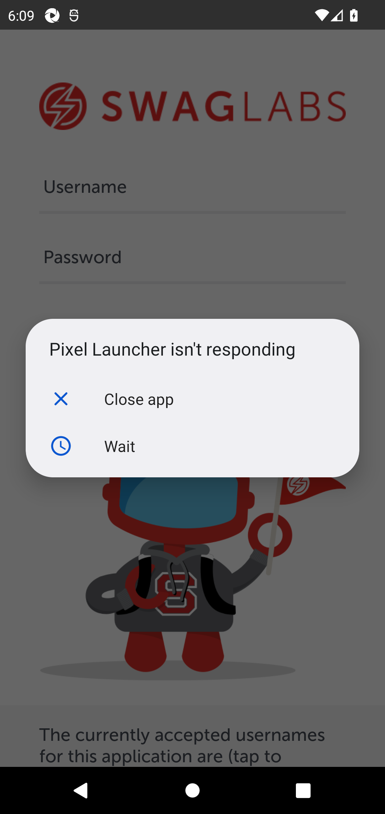

-
Formulário de Cadastro - Preenchimento e Envio de Dados Pessoais
6:08:08 AM / 00:00:42:982 Fail
Formulário de Cadastro - Preenchimento e Envio de Dados Pessoais
04.02.2026 6:08:08 AM 04.02.2026 6:08:51 AM 00:00:42:982 · #test-id=1FailPreenchimento completo com dados válidos e envio do pedidoDado o usuário está autenticado com e-mail "standard_user" e senha "secret_sauce"E o usuário autenticado navega até o formulário de cadastroStep skippedQuando o usuário preenche o formulário de cadastro com:nome sobrenome cep João Silva 01310-100 Step skippedE o usuário confirma o formulárioStep skippedEntão o resumo do pedido deve ser exibidoStep skippedQuando o usuário finaliza o pedidoStep skippedEntão o pedido deve ser concluído com sucessoStep skippedE a mensagem de agradecimento deve ser exibidaStep skippedcom.automation.hooks.Hooks.scenarioTearDown(io.cucumber.java.Scenario)📸 Evidência de falha — Preenchimento completo com dados válidos e envio do pedido -
Login - Autenticação de Usuário
6:08:51 AM / 00:00:55:947 Fail
Login - Autenticação de Usuário
04.02.2026 6:08:51 AM 04.02.2026 6:09:47 AM 00:00:55:947 · #test-id=13FailLogin com credenciais válidasDado o aplicativo está aberto na tela de loginQuando o usuário insere o e-mail "standard_user"Step skippedE o usuário insere a senha "secret_sauce"Step skippedE o usuário toca no botão de loginStep skippedEntão o usuário deve ser redirecionado para a tela de ProdutosStep skippedE o título "PRODUCTS" deve estar visívelStep skippedcom.automation.hooks.Hooks.scenarioTearDown(io.cucumber.java.Scenario)📸 Evidência de falha — Login com credenciais válidas
FailLogout após login bem-sucedidoDado o aplicativo está aberto na tela de loginQuando o usuário insere o e-mail "standard_user"Step skippedE o usuário insere a senha "secret_sauce"Step skippedE o usuário toca no botão de loginStep skippedEntão o usuário deve ser redirecionado para a tela de ProdutosStep skippedQuando o usuário realiza o logoutStep skippedEntão o usuário deve estar na tela de loginStep skippedcom.automation.hooks.Hooks.scenarioTearDown(io.cucumber.java.Scenario)📸 Evidência de falha — Logout após login bem-sucedido
-
Formulário de Cadastro - Preenchimento e Envio de Dados Pessoais
6:09:47 AM / 00:00:26:981 Fail
Formulário de Cadastro - Preenchimento e Envio de Dados Pessoais
04.02.2026 6:09:47 AM 04.02.2026 6:10:14 AM 00:00:26:981 · #test-id=33FailPreenchimento completo com dados válidos e envio do pedidoDado o usuário está autenticado com e-mail "standard_user" e senha "secret_sauce"E o usuário autenticado navega até o formulário de cadastroStep skippedQuando o usuário preenche o formulário de cadastro com:nome sobrenome cep João Silva 01310-100 Step skippedE o usuário confirma o formulárioStep skippedEntão o resumo do pedido deve ser exibidoStep skippedQuando o usuário finaliza o pedidoStep skippedEntão o pedido deve ser concluído com sucessoStep skippedE a mensagem de agradecimento deve ser exibidaStep skippedcom.automation.hooks.Hooks.scenarioTearDown(io.cucumber.java.Scenario)📸 Evidência de falha — Preenchimento completo com dados válidos e envio do pedido
-
Login - Autenticação de Usuário
6:10:14 AM / 00:00:51:416 Fail
Login - Autenticação de Usuário
04.02.2026 6:10:14 AM 04.02.2026 6:11:06 AM 00:00:51:416 · #test-id=45FailLogin com credenciais válidasDado o aplicativo está aberto na tela de loginQuando o usuário insere o e-mail "standard_user"Step skippedE o usuário insere a senha "secret_sauce"Step skippedE o usuário toca no botão de loginStep skippedEntão o usuário deve ser redirecionado para a tela de ProdutosStep skippedE o título "PRODUCTS" deve estar visívelStep skippedcom.automation.hooks.Hooks.scenarioTearDown(io.cucumber.java.Scenario)📸 Evidência de falha — Login com credenciais válidasFailLogout após login bem-sucedidoDado o aplicativo está aberto na tela de loginQuando o usuário insere o e-mail "standard_user"Step skippedE o usuário insere a senha "secret_sauce"Step skippedE o usuário toca no botão de loginStep skippedEntão o usuário deve ser redirecionado para a tela de ProdutosStep skippedQuando o usuário realiza o logoutStep skippedEntão o usuário deve estar na tela de loginStep skippedcom.automation.hooks.Hooks.scenarioTearDown(io.cucumber.java.Scenario)📸 Evidência de falha — Logout após login bem-sucedido
-
org.openqa.selenium.TimeoutException
2 tests
org.openqa.selenium.TimeoutException
2 failedStatus Timestamp TestName Fail 06:08:28 AM Dado o usuário está autenticado com e-mail "standard_user" e senha "secret_sauce" Formulário de Cadastro - Preenchimento e Envio de Dados Pessoais.Preenchimento completo com dados válidos e envio do pedido.Dado o usuário está autenticado com e-mail "standard_user" e senha "secret_sauce"Fail 06:09:53 AM Dado o usuário está autenticado com e-mail "standard_user" e senha "secret_sauce" Formulário de Cadastro - Preenchimento e Envio de Dados Pessoais.Preenchimento completo com dados válidos e envio do pedido.Dado o usuário está autenticado com e-mail "standard_user" e senha "secret_sauce" -
org.opentest4j.AssertionFailedError
4 tests
org.opentest4j.AssertionFailedError
4 failedStatus Timestamp TestName Fail 06:08:58 AM Dado o aplicativo está aberto na tela de login Login - Autenticação de Usuário.Login com credenciais válidas.Dado o aplicativo está aberto na tela de loginFail 06:09:25 AM Dado o aplicativo está aberto na tela de login Login - Autenticação de Usuário.Logout após login bem-sucedido.Dado o aplicativo está aberto na tela de loginFail 06:10:19 AM Dado o aplicativo está aberto na tela de login Login - Autenticação de Usuário.Login com credenciais válidas.Dado o aplicativo está aberto na tela de loginFail 06:10:45 AM Dado o aplicativo está aberto na tela de login Login - Autenticação de Usuário.Logout após login bem-sucedido.Dado o aplicativo está aberto na tela de login
-
@formulario
2 tests
@formulario
2 failedStatus Timestamp TestName Fail 06:08:08 AM Preenchimento completo com dados válidos e envio do pedido Formulário de Cadastro - Preenchimento e Envio de Dados Pessoais.Preenchimento completo com dados válidos e envio do pedidoFail 06:09:47 AM Preenchimento completo com dados válidos e envio do pedido Formulário de Cadastro - Preenchimento e Envio de Dados Pessoais.Preenchimento completo com dados válidos e envio do pedido -
@regression
6 tests
@regression
6 failedStatus Timestamp TestName Fail 06:08:08 AM Preenchimento completo com dados válidos e envio do pedido Formulário de Cadastro - Preenchimento e Envio de Dados Pessoais.Preenchimento completo com dados válidos e envio do pedidoFail 06:08:51 AM Login com credenciais válidas Login - Autenticação de Usuário.Login com credenciais válidasFail 06:09:20 AM Logout após login bem-sucedido Login - Autenticação de Usuário.Logout após login bem-sucedidoFail 06:09:47 AM Preenchimento completo com dados válidos e envio do pedido Formulário de Cadastro - Preenchimento e Envio de Dados Pessoais.Preenchimento completo com dados válidos e envio do pedidoFail 06:10:14 AM Login com credenciais válidas Login - Autenticação de Usuário.Login com credenciais válidasFail 06:10:40 AM Logout após login bem-sucedido Login - Autenticação de Usuário.Logout após login bem-sucedido -
@login
4 tests
@login
4 failedStatus Timestamp TestName Fail 06:08:51 AM Login com credenciais válidas Login - Autenticação de Usuário.Login com credenciais válidasFail 06:09:20 AM Logout após login bem-sucedido Login - Autenticação de Usuário.Logout após login bem-sucedidoFail 06:10:14 AM Login com credenciais válidas Login - Autenticação de Usuário.Login com credenciais válidasFail 06:10:40 AM Logout após login bem-sucedido Login - Autenticação de Usuário.Logout após login bem-sucedido -
@smoke
6 tests
@smoke
6 failedStatus Timestamp TestName Fail 06:08:08 AM Preenchimento completo com dados válidos e envio do pedido Formulário de Cadastro - Preenchimento e Envio de Dados Pessoais.Preenchimento completo com dados válidos e envio do pedidoFail 06:08:51 AM Login com credenciais válidas Login - Autenticação de Usuário.Login com credenciais válidasFail 06:09:20 AM Logout após login bem-sucedido Login - Autenticação de Usuário.Logout após login bem-sucedidoFail 06:09:47 AM Preenchimento completo com dados válidos e envio do pedido Formulário de Cadastro - Preenchimento e Envio de Dados Pessoais.Preenchimento completo com dados válidos e envio do pedidoFail 06:10:14 AM Login com credenciais válidas Login - Autenticação de Usuário.Login com credenciais válidasFail 06:10:40 AM Logout após login bem-sucedido Login - Autenticação de Usuário.Logout após login bem-sucedido
Started
02/04/2026 06:08:06
Ended
02/04/2026 06:11:06
Features Passed
0
Features Failed
4
Features
Scenarios
Steps
Timeline
Tags
| Name | Passed | Failed | Skipped | Others | Passed % |
|---|---|---|---|---|---|
| @formulario | 0 | 2 | 0 | 0 | 0% |
| @regression | 0 | 6 | 0 | 0 | 0% |
| @login | 0 | 4 | 0 | 0 | 0% |
| @smoke | 0 | 6 | 0 | 0 | 0% |